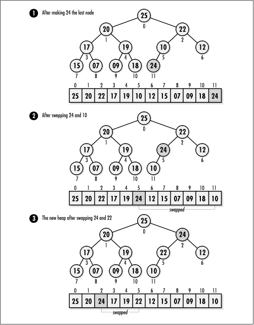
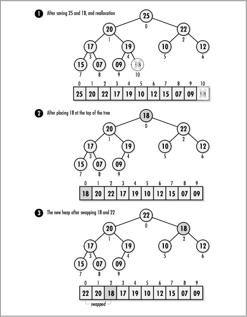

10.3 Implementation and Analysis of
Heaps
The heap implemented here is a binary tree
whose nodes are arranged hierarchically in an array. The
structure Heap is the heap data structure (see
Example
10.1). This structure consists
of four members: size is the number of nodes
in the heap, compare and
destroy are members used to encapsulate the
functions passed to heap_init,
and tree is the array of nodes in the
heap.
Example 10.1.
Header for the Heap Abstract Datatype /*****************************************************************************
* *
* -------------------------------- heap.h -------------------------------- *
* *
*****************************************************************************/
#ifndef HEAP_H
#define HEAP_H
/*****************************************************************************
* *
* Define a structure for heaps. *
* *
*****************************************************************************/
typedef struct Heap_ {
int size;
int (*compare)(const void *key1, const void *key2);
void (*destroy)(void *data);
void **tree;
} Heap;
/*****************************************************************************
* *
* --------------------------- Public Interface --------------------------- *
* *
*****************************************************************************/
void heap_init(Heap *heap, int (*compare)(const void *key1, const void *key2),
void (*destroy)(void *data));
void heap_destroy(Heap *heap);
int heap_insert(Heap *heap, const void *data);
int heap_extract(Heap *heap, void **data);
#define heap_size(heap) ((heap)->size)
#endif
10.3.1 heap_init
The heap_init operation initializes a
heap so that it can be used in other operations (see Example
10.2). Initializing a heap is a simple operation in which
we set the size member of the heap to 0, the
destroy member to destroy, and
the tree pointer to NULL.
The runtime complexity of heap_init is O (1) because all of the steps in
initializing a heap run in a constant amount of time.
10.3.2 heap_destroy
The heap_destroy operation destroys a
heap (see Example
10.2). Primarily this means removing all nodes from the
heap. The function passed as destroy to heap_init is called once for each
node as it is removed, provided destroy was
not set to NULL.
The runtime complexity of heap_destroy is O (n),
where n is the number of nodes
in the heap. This is because we must traverse all nodes in the
heap in order to free the data they contain. If
destroy is NULL, heap_destroy runs in O (1) time.
10.3.3 heap_insert
The heap_insert operation inserts a node
into a heap (see Example
10.2). The call sets the new node to point to the data
passed by the caller. To begin, we reallocate storage to
enable the tree to accommodate the new node. The actual
process of inserting the new node initially places it into the
last position in the array. When this causes the heap property
to be violated, we must reheapify the tree (see Figure
10.2).

To reheapify a tree
after inserting a node, we need only consider the branch in
which the new node has been inserted, since the tree was a
heap to begin with. Starting at the new node, we move up the
tree level by level, comparing each child with its parent. At
each level, if a parent and child are in the wrong order, we
swap their contents. This process continues until we reach a
level at which no swap is required, or we reach the top of the
tree. Last, we update the size of the heap by incrementing the
size member of the heap data structure.
The runtime complexity of heap_insert is O (lg n), where n is the number of nodes in the tree.
This is because heapification requires moving the contents of
the new node from the lowest level of the tree to the top in
the worst case, a traversal of lg n levels. All other parts of the
operation run in a constant amount of time.
10.3.4 heap_extract
The heap_extract operation extracts the
node at the top of a heap (see Example
10.2). To begin, we set data to point to
the data stored in the node being extracted. Next, we save the
contents of the last node, reallocate a smaller amount of
storage for the tree, and decrease the tree size by 1. After
we are certain this has succeeded, we copy the contents of the
saved last node to the root node. When this causes the heap
property to be violated, we must reheapify the tree (see Figure
10.3).
To reheapify a tree
after extracting a node, we start at the root node and move
down the tree level by level, comparing each node with its two
children. At each level, if a parent and its children are in
the wrong order, we swap their contents and move to the child
that was the most out of order. This process continues until
we reach a level at which no swap is required, or we reach a
leaf node. Last, we update the size of the heap by decreasing
the size member of the heap data structure by
1.
The runtime complexity of heap_extract is O (lg n), where n is the number of nodes in the tree.
This is because heapification requires moving the contents of
the root node from the top of the tree to a leaf node in the
worst case, a traversal of lg n
levels. All other parts of the operation run in a constant
amount of time.
10.3.5 heap_size
This macro evaluates to the number of
nodes in a heap (see Example
10.1). It works by accessing the size
member of the Heap structure.

The runtime complexity of heap_size is O (1) because accessing a member of a
structure is a simple task that runs in a constant amount of
time.
Example 10.2.
Implementation of the Heap Abstract Datatype /*****************************************************************************
* *
* -------------------------------- heap.c -------------------------------- *
* *
*****************************************************************************/
#include <stdlib.h>
#include <string.h>
#include "heap.h"
/*****************************************************************************
* *
* Define private macros used by the heap implementation. *
* *
*****************************************************************************/
#define heap_parent(npos) ((int)(((npos) - 1) / 2))
#define heap_left(npos) (((npos) * 2) + 1)
#define heap_right(npos) (((npos) * 2) + 2)
/*****************************************************************************
* *
* ------------------------------- heap_init ------------------------------ *
* *
*****************************************************************************/
void heap_init(Heap *heap, int (*compare)(const void *key1, const void *key2),
void (*destroy)(void *data)) {
/*****************************************************************************
* *
* Initialize the heap. *
* *
*****************************************************************************/
heap->size = 0;
heap->compare = compare;
heap->destroy = destroy;
heap->tree = NULL;
return;
}
/*****************************************************************************
* *
* ----------------------------- heap_destroy ----------------------------- *
* *
*****************************************************************************/
void heap_destroy(Heap *heap) {
int i;
/*****************************************************************************
* *
* Remove all the nodes from the heap. *
* *
*****************************************************************************/
if (heap->destroy != NULL) {
for (i = 0; i < heap_size(heap); i++) {
/***********************************************************************
* *
* Call a user-defined function to free dynamically allocated data. *
* *
***********************************************************************/
heap->destroy(heap->tree[i]);
}
}
/*****************************************************************************
* *
* Free the storage allocated for the heap. *
* *
*****************************************************************************/
free(heap->tree);
/*****************************************************************************
* *
* No operations are allowed now, but clear the structure as a precaution. *
* *
*****************************************************************************/
memset(heap, 0, sizeof(Heap));
return;
}
/*****************************************************************************
* *
* ------------------------------ heap_insert ----------------------------- *
* *
*****************************************************************************/
int heap_insert(Heap *heap, const void *data) {
void *temp;
int ipos,
ppos;
/*****************************************************************************
* *
* Allocate storage for the node. *
* *
*****************************************************************************/
if ((temp = (void **)realloc(heap->tree, (heap_size(heap) + 1) * sizeof
(void *))) == NULL) {
return -1;
}
else {
heap->tree = temp;
}
/*****************************************************************************
* *
* Insert the node after the last node. *
* *
*****************************************************************************/
heap->tree[heap_size(heap)] = (void *)data;
/*****************************************************************************
* *
* Heapify the tree by pushing the contents of the new node upward. *
* *
*****************************************************************************/
ipos = heap_size(heap);
ppos = heap_parent(ipos);
while (ipos > 0 && heap->compare(heap->tree[ppos], heap->tree[ipos]) < 0) {
/**************************************************************************
* *
* Swap the contents of the current node and its parent. *
* *
**************************************************************************/
temp = heap->tree[ppos];
heap->tree[ppos] = heap->tree[ipos];
heap->tree[ipos] = temp;
/**************************************************************************
* *
* Move up one level in the tree to continue heapifying. *
* *
**************************************************************************/
ipos = ppos;
ppos = heap_parent(ipos);
}
/*****************************************************************************
* *
* Adjust the size of the heap to account for the inserted node. *
* *
*****************************************************************************/
heap->size++;
return 0;
}
/*****************************************************************************
* *
* ----------------------------- heap_extract ----------------------------- *
* *
*****************************************************************************/
int heap_extract(Heap *heap, void **data) {
void *save,
*temp;
int ipos,
lpos,
rpos,
mpos;
/*****************************************************************************
* *
* Do not allow extraction from an empty heap. *
* *
*****************************************************************************/
if (heap_size(heap) == 0)
return -1;
/*****************************************************************************
* *
* Extract the node at the top of the heap. *
* *
*****************************************************************************/
*data = heap->tree[0];
/*****************************************************************************
* *
* Adjust the storage used by the heap. *
* *
*****************************************************************************/
save = heap->tree[heap_size(heap) - 1];
if (heap_size(heap) - 1 > 0) {
if ((temp = (void **)realloc(heap->tree, (heap_size(heap) - 1) * sizeof
(void *))) == NULL) {
return -1;
}
else {
heap->tree = temp;
}
/**************************************************************************
* *
* Adjust the size of the heap to account for the extracted node. *
* *
**************************************************************************/
heap->size--;
}
else {
/**************************************************************************
* *
* Manage the heap when extracting the last node. *
* *
**************************************************************************/
free(heap->tree);
heap->tree = NULL;
heap->size = 0;
return 0;
}
/*****************************************************************************
* *
* Copy the last node to the top. *
* *
*****************************************************************************/
heap->tree[0] = save;
/*****************************************************************************
* *
* Heapify the tree by pushing the contents of the new top downward. *
* *
*****************************************************************************/
ipos = 0;
lpos = heap_left(ipos);
rpos = heap_right(ipos);
while (1) {
/**************************************************************************
* *
* Select the child to swap with the current node. *
* *
**************************************************************************/
lpos = heap_left(ipos);
rpos = heap_right(ipos);
if (lpos < heap_size(heap) && heap->compare(heap->tree[lpos], heap->
tree[ipos]) > 0) {
mpos = lpos;
}
else {
mpos = ipos;
}
if (rpos < heap_size(heap) && heap->compare(heap->tree[rpos], heap->
tree[mpos]) > 0) {
mpos = rpos;
}
/**************************************************************************
* *
* When mpos is ipos, the heap property has been restored. *
* *
**************************************************************************/
if (mpos == ipos) {
break;
}
else {
/***********************************************************************
* *
* Swap the contents of the current node and the selected child. *
* *
***********************************************************************/
temp = heap->tree[mpos];
heap->tree[mpos] = heap->tree[ipos];
heap->tree[ipos] = temp;
/***********************************************************************
* *
* Move down one level in the tree to continue heapifying. *
* *
***********************************************************************/
ipos = mpos;
}
}
return 0;
}
|